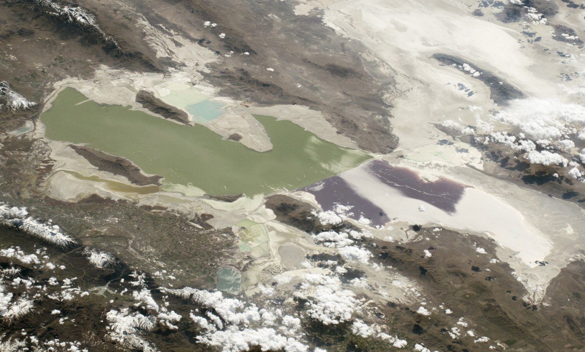
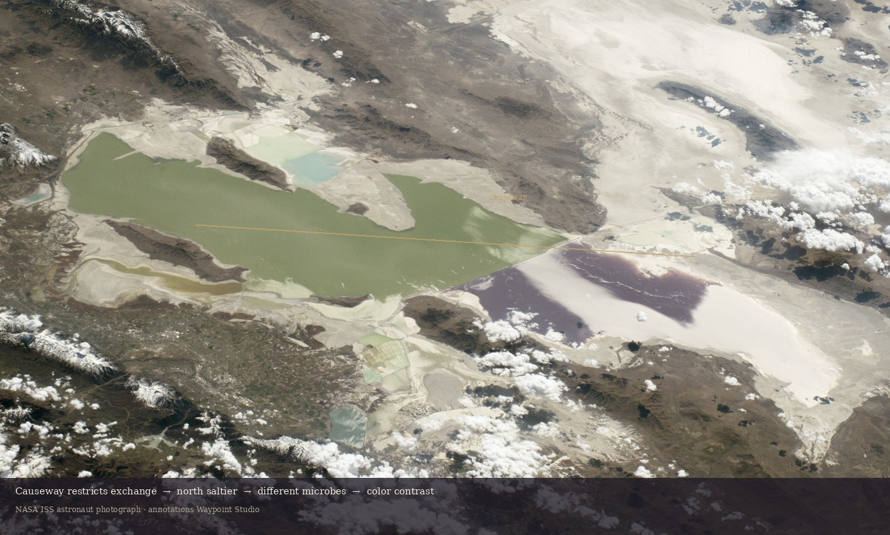

A lake with a hard edge
The Great Salt Lake does not fade from one color into another. On many clear days, the change is abrupt: a north arm that reads pink to red, a south arm that reads greener or blue-green, and a narrow east–west seam between them.
That seam is not a trick of the camera. It is infrastructure. A rock-fill railroad causeway has restricted water exchange across the lake since 1959 — long enough for salinity, biology, and color to diverge.

Where this is happening
The Great Salt Lake sits in northern Utah as a shallow terminal lake: water arrives from rivers, streams, precipitation, and groundwater, and leaves mainly by evaporation. It is a remnant of much larger Ice Age Lake Bonneville.
Today’s main body is commonly described as a north arm (Gunnison Bay) and a south arm (Gilbert Bay), separated by the causeway that carries rail across the lake.
How the causeway remade the lake
Before the mid-twentieth-century rock-fill causeway, the lake mixed more freely. Completing the causeway in 1959 partitioned the main body into two basins with only limited connection — historically through culverts, porous fill, and later engineered openings and a bridge span.
Restricted exchange matters because freshwater does not arrive evenly. The Bear, Weber, and Jordan rivers deliver the great majority of streamflow into the south arm. The north arm receives far less direct freshwater and tends to concentrate salt.
Two salinities in one basin
With most freshwater locked on the south side, the north arm commonly sits at much higher salinity — often near saturation with respect to halite (rock salt). The south arm remains hypersaline by ocean standards, but typically far less extreme than the north.
Peer-reviewed water-and-salt modeling of the lake has reported multi-decadal averages on the order of roughly 300+ g/L in the north versus much lower values in the south — numbers that move with lake level, season, and how open the causeway connections are. Treat them as evidence of a persistent gradient, not a permanent barcode.
Dense north-arm brine can also move through deeper openings and influence stratification in the south. The physical story is exchange under constraint — not a complete seal.
Why the colors follow the chemistry
Salinity selects the biology. In the hypersaline north arm, salt-tolerant communities — including the green alga Dunaliella salina and halophilic archaea such as Halobacterium — can dominate. Their red carotenoid pigments help the water read pink to red from above.
In the less extreme south arm, greener algal communities (often including Dunaliella viridis) are more typical, and the water’s color shifts accordingly. Brine shrimp and brine flies are part of the same salinity-shaped food web, especially in the south.

So the honest chain is physical first: causeway → restricted exchange → salinity divergence → different microbial communities → visible color contrast. “Bacteria on one side” is a fragment of the last step, not the system.
Causeway → salinity → color
This diagram compresses the system into the sequence a satellite already shows: a barrier, two chemistries, and two living colors.


Why the colors are not permanent paint
Lake level rises and falls with climate and water use. Culverts have been closed; openings and a bridge have changed exchange. North-arm salt crusts thicken and dissolve. Microbial blooms wax and wane with season and chemistry.
That is why some years look like a hard two-tone flag and other years look softer or shifted. The causeway still structures the system; the exact pigments are weather and management written on water.
Explore further
If you visit the Wasatch Front, high-contrast lake light rewards patience — and honest conditions matter as much as the postcard. Waypoint’s Dashboard and Scenes are built for checking weather and light before you go, not for inventing a lake-color forecast.